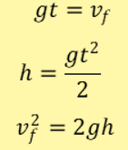
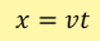

¿QUE ES EL TIRO SEMI PARABOLICO?
El movimiento parabólico es el desplazamiento realizado por cualquier objeto cuya trayectoria describe una parábola, el cual corresponde con la trayectoria ideal de un proyectil que se mueve en un medio que no ofrece resistencia al avance y que esté sujeto a un campo gravitatorio uniforme
movimiento se caracteriza porque el cuerpo simultáneamente se mueve en el eje "x" y en el eje "y".
SABIAS QUE...
ECUACIONES DEL MOVIMIENTO SEMIPARABOLICO
Ecuaciones en el eje "y":En este eje; el cuerpo experimenta un movimiento de caída de cuerpos; donde la velocidad inicial (vo)
es cero y la aceleración de la gravedad es positiva; por lo tanto sus ecuaciones en la caída son:

ECUACIONES DEL MOVIMIENTO SEMIPARABOLICO
Ecuaciones en el eje "x":En este eje; el cuerpo experimenta una velocidad constante; es decir un (mur). Por lo tanto su ecuación en este eje es:
